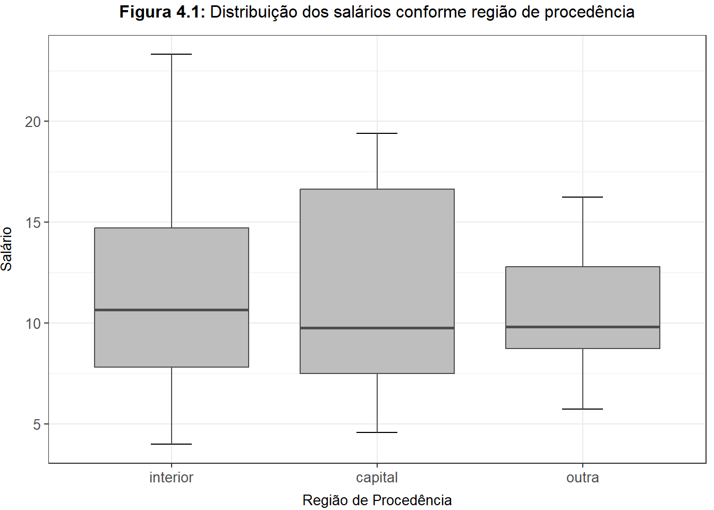
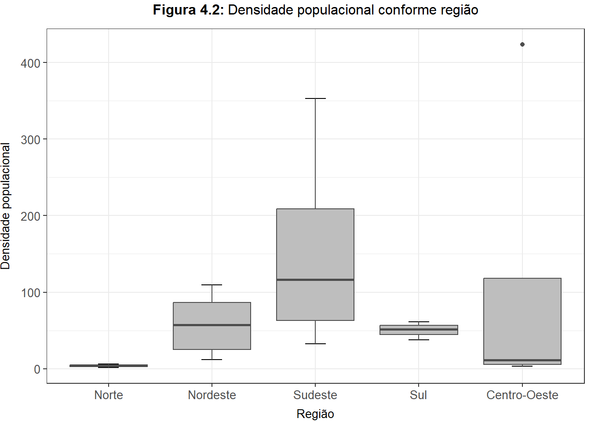
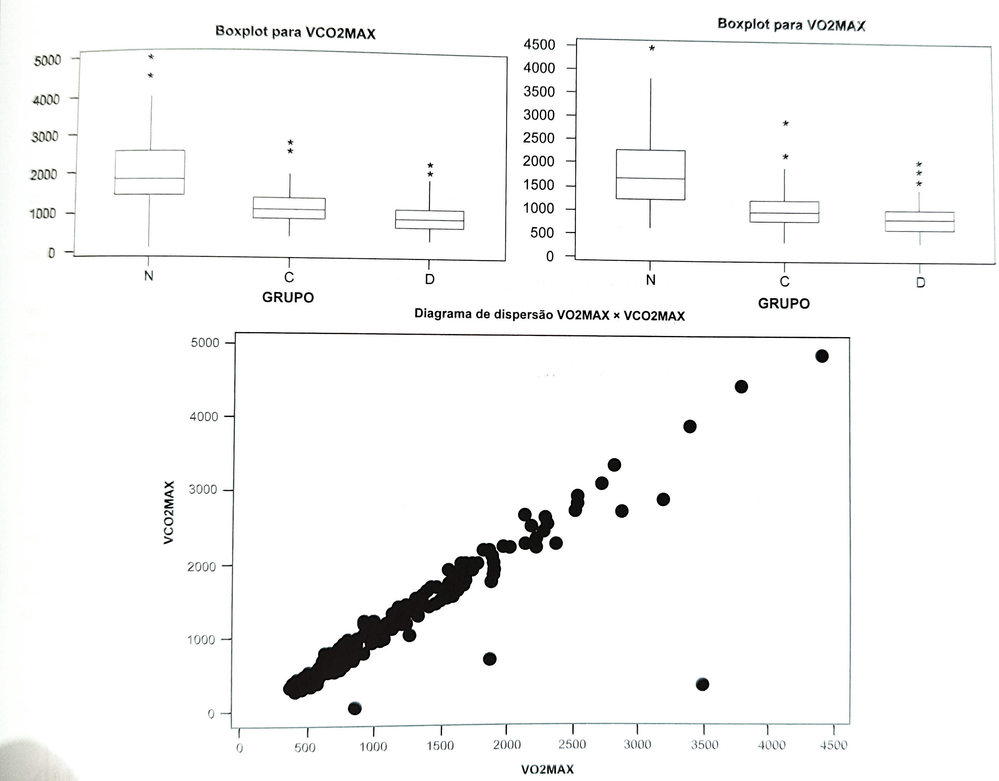
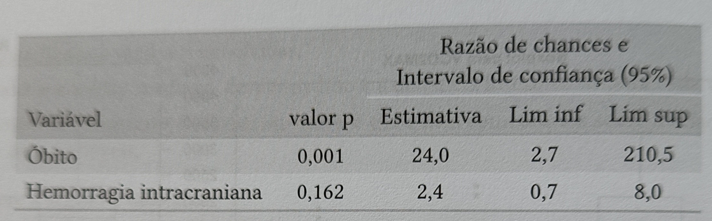

Capítulo 4 Análise de dados de duas variáveis
4.1 Introdução
De maneira geral, dizemos que existe uma associação entre duas variáveis se o conhecimento do valor de uma delas nos dá alguma característica da distribuição (de frequência) da outra. (MORETTIN; SINGER, 2022, p. 79)
4.2 Duas variáveis qualitativas
Dnotando os valores observados por \(o_i\) e os esperados por \(e_i\), \(i = 1, 2, 3, 4\), podemos calcular os residuos \(r_i = o_i - e_i\) e verificar que \(\sum_i r_i = 0\). Uma medida da discrepância entre os valores observados e aqueles esperados sob a hipótese \(H\) é chamada estatística ou qui-quadrado de Pearson, \[\chi^2 = \sum\limits_{i = 1}^{n} \frac{(o_i - e_i)^2}{e_i}\] (MORETTIN; SINGER, 2022, p. 82).
A própria estatística de Pearson poderia servir como medida da intensidade da associação mas seu valor valor aumenta com o tamanho da amostra; uma alternativa para corrigir ese problema é o coeficiente de contingência de Pearson, dado por \[C = \sqrt{\frac{\chi^2}{\chi^2 + n}}\] (MORETTIN; SINGER, 2022, p. 83).
Uma modificação de \(C\) é o ** ceficiente de Tschuprov**, \[ T = \sqrt{\frac{\chi^2/n}{\sqrt{(r - 1)(c - 1)}}} \ ,\] que atinge o valor máximo igual a \(1\) quando \(r = c\) (MORETTIN; SINGER, 2022, p. 83).
Uma estimativa do índice denominado \(\kappa\) de Cohen (1960), construido com esse propósito [avaliar a magnitude da concordância entre duas classificações] é \[\hat{\kappa} = \frac{\sum \limits_{i = 1}^{3}p_{ii} - \sum \limits_{i = 1}^{3}p_{i+}p_{+i}}{1 - \sum \limits_{i = 1}^{3}p_{i+}p_{+i}}\] Nessa expressão, $p_{ij} representa frequência relativa associada à casela correspondente à linha \(i\) e coluna \(j\) da tabela [de contingência] e \(p_{i+}\) e \(p_{+j}\) representam a soma das frequências relativas asociadas à linha \(i\) e coluna \(j\), respectivamente (MORETTIN; SINGER, 2022, p. 85).
Risco atribuível: \(d = \pi_1 - \pi_0\), que coresponde a diferença entre as probabilidades (ou riscos) de ocorrência do evento de interese para expostos e não expostos ao fator de risco (MORETTIN; SINGER, 2022, p. 86).
Risco relativo: \(r=\pi_{1}/\pi_{0}\), que corresponde ao quociente entre as probabilidades de ocorrência do evento de interesse para expostos e não expostos ao fator de risco (MORETTIN; SINGER, 2022, p. 87).
Razão de chances (odds ratio): \(\omega=[\pi_{1}/(1-\pi_{1})]/[\pi_{0}/(1-\pi_{0})]\), que corresponde ao quociente entre as chances de ocorrência do evento de interesse para expostos e não expostos ao fator de risco (MORETTIN; SINGER, 2022, p. 87).
Acurácia: corresponde à probabilidade de resultados corretos (MORETTIN; SINGER, 2022, p. 89).
Sensibilidade e especificidade são características do teste, mas tanto o valor preditivo positivo quanto o valor preditivo negativo dependem da prevalência (porcentagem de indivíduos doentes na população) da doença (MORETTIN; SINGER, 2022, p. 89).
4.3 Duas variáveis quantitativas
Dado um conjunto de \(n\) pares \((x_i, y_i)\), a associação (linear) entre as variáveis quantitativas \(X\) e \(Y\) pode ser quantificada por meio do coeficiente de correlação (linear) de Pearson, definifo por \[r_p = \frac{\sum \limits_{i=1}^{n}(x_i - \overline{x})(y_i - \overline{y})}{\left[ \sum \limits_{i = 1}^{n}(x_i - \overline{x})^2 \cdot \sum\limits_{i=1}^{n}(y_i - \overline{y})^2 \right]^{1/2}}\] (MORETTIN; SINGER, 2022, p. 91).
[…] uma medida de associação mais robusta é o coeficiente de correlação de Apearman cuja expressão é similar à (4.4) [coef. de Pearson] com valores de \(X\) e \(Y\) substituídos pelos respectivos postos. […] \[r_p = \frac{\sum \limits_{i=1}^{n}(R_i - \overline{R})(S_i - \overline{S})}{\left[ \sum \limits_{i = 1}^{n}(R_i - \overline{R})^2 \cdot \sum\limits_{i=1}^{n}(S_i - \overline{S})^2 \right]^{1/2}}\] (MORETTIN; SINGER, 2022, p. 92).
[…] o coeficiente de correlação de Spearman é mais apropriado para avaliação de associações não lineares, desde que sejam monotônicas […] (MORETTIN; SINGER, 2022, p. 93).
[…] dados longitudinais, i.e., aqueles qem que a mesma variável é observada em cada unidade amostral mais do que uma vez ao longo do tempo […] (MORETTIN; SINGER, 2022, p. 95).
Gráfico de médias/diferenças ou gráfico de Bland-Altman “consiste num gráfico das diferenças entre duas observações pareadas \((X_{2i} - X_{1i})\) em função das médias correspondentes \([(X_{1i} + X_{2i})/2]\), \(i = 1, \cdots, n\)” (MORETTIN; SINGER, 2022, p. 97–98).
4.4 Uma variável qualitativa e outra quantitativa
Outro gráfico útil para avaliar a associação entre a variável quantitativa […] e a variável qualitativa […] é o gráfico de perfis médios. Nesse gráfico cartesiano as médias (e barras representando desvios padrões, erros padrões ou intervalos de confiança […]) da variável quantitativa são representadas no eixo das ordenadas e os níveis da variável qualitativa, no eixo das abscissas (MORETTIN; SINGER, 2022, p. 101).
Então podemos definir o grau de associação entre duas variáveis como o ganho relativo na variância obtido pela introdução da variável qualitativa. Explicitamente: \[R^2 = \frac{Var(S) - \overline{Var(S)}}{Var(S)} = 1 - \frac{\overline{Var(S)}}{Var(S)}\] Além disso, pode-se mostrar que \(0 \le R^2 \le 1\) (MORETTIN; SINGER, 2022, p. 106).
\(R^2\) indica o percentual da variação de uma variável dependente que pode ser explicada pela variável independente (MORETTIN; SINGER, 2022, p. 106).
4.5 Notas de capítulo
Embora não se possa calcular o risco relativo de doença em estudos retrospectivos, a razão de chances obtida por meio desse tipo de estudo é igual àquela que seria obtida por intermédio de um estudo prospectivo, que em muitas situações práticas não pode ser realizado devido ao custo (MORETTIN; SINGER, 2022, p. 107).
4.6 Exercícios
Exercício 4.1
Considere o conjunto de dados disponível no arquivo empresa.xls. Compare as distribuições de frequências das variáveis Estado civil, Grau de Instrução e Salário para indivíduos com diferentes procedências.
Solução. Vamos começar carregando os dados.
empresa <- readxl::read_xls(paste0(data_dir, "empresa.xls"), skip = 1)
colnames(empresa) <- c("id", "estado", "instrucao", "filhos", "salario", "anos", "meses", "regiao")
empresa <- empresa %>%
mutate(
estado = parse_factor(estado, levels = c("solteiro", "casado", "divorciado", "viúdo"), ordered = FALSE),
instrucao = parse_factor(instrucao, ordered = TRUE, levels = c("ensino fundamental", "ensino médio", "superior")),
regiao = parse_factor(regiao, ordered = FALSE, levels = c("interior", "capital", "outra")),
idade = anos + (meses / 12)
)
write_csv(empresa, paste0(data_dir, "empresa.csv"))Com os dados carregados e arrumados, podemos partir para as análises.
Estado Civil versus Região de Procedência
Por se tratar de duas variáveis categóricas, vamos analisá-las a partir da tabela de contingência, à estatística qui-quadrado de Pearson e ao coeficiente de contingência de Pearson.
empresa %>%
group_by(estado, regiao) %>%
count() %>%
bind_rows(
group_by(., estado) %>%
summarise(n = sum(n)) %>%
mutate(regiao = "Total")
) %>%
bind_rows(
group_by(., regiao) %>%
summarise(n = sum(n)) %>%
mutate(estado = "Total")
) %>%
spread(regiao, n) %>%
kable(
format = "pipe",
caption = "**Tabela 4.1:** Distribuição conjunta das variáveis Estado Civil e Região de Procedência",
label = NA,
digits = 2,
align = "c",
format.args = list(decimal.mark = ",")
)| estado | capital | interior | outra | Total |
|---|---|---|---|---|
| casado | 7 | 8 | 5 | 20 |
| solteiro | 4 | 4 | 8 | 16 |
| Total | 11 | 12 | 13 | 36 |
Utilizaremos a função chisq.test() para calcular nossas estatísticas de interesse:
## Warning in chisq.test(empresa$estado, empresa$regiao): Aproximação do
## qui-quadrado pode estar incorretaApós os cálculos, constatamos que o valor de \(\chi^2\) é 2.4293706 e o coeficiente \(C\) de contingência de Pearson é de 0.2514289, indicando uma baixa correlação entre as variáveis.
Grau de Instrução versus Região de Procedência
Novamente usaremos a tabela de contingência, a estatística qui-quadrado de Pearson e o coeficiente de contingência de Pearson.
empresa %>%
group_by(instrucao, regiao) %>%
count() %>%
bind_rows(
group_by(., instrucao) %>%
summarise(n = sum(n)) %>%
mutate(regiao = "Total")
) %>%
bind_rows(
group_by(., regiao) %>%
summarise(n = sum(n)) %>%
mutate(instrucao = "Total")
) %>%
spread(regiao, n) %>%
kable(
format = "pipe",
caption = "**Tabela 4.2:** Distribuição conjunta das variáveis Grau de Instrução e Região de Procedência",
label = NA,
digits = 2,
align = "c",
format.args = list(decimal.mark = ",")
)| instrucao | capital | interior | outra | Total |
|---|---|---|---|---|
| ensino fundamental | 4 | 3 | 5 | 12 |
| ensino médio | 5 | 7 | 6 | 18 |
| superior | 2 | 2 | 2 | 6 |
| Total | 11 | 12 | 13 | 36 |
Utilizaremos a função chisq.test() para calcular nossas estatísticas de interesse:
## Warning in chisq.test(empresa$instrucao, empresa$regiao): Aproximação do
## qui-quadrado pode estar incorretaApós os cálculos, constatamos que o valor de \(\chi^2\) é 0.6614219 e o coeficiente \(C\) de contingência de Pearson é de 0.1343181, indicando uma baixa correlação entre as variáveis.
Salário versus Região de Procedência
Agora temos em mãos uma variável qualitativa e outra quantitativa. Utilizaremos uma tabela de resumo e gráfico de boxplots para avaliar a relação, além de calcularmos a estatística \(R^2\).
A Tabela 4.3 a seguir apresenta as medidas de resumo para o salário dos funcionários, conforme a região de procedência do funcionário. A Figura 4.1 apresenta uma comparação gráfica dos salários utilizando boxplots.
empresa %>%
statds_summarise(salario, regiao) %>%
kable(
format = "pipe",
caption = "**Tabela 4.3:** Medidas de resumo para a variável `Salário`, conforme `Região de procedência`",
label = NA,
digits = 2,
align = "c",
format.args = list(decimal.mark = ",")
)| regiao | n | Média | Variância | Desvio Padrão | Min. | Q1 | Mediana | Q3 | Máx. | IQR |
|---|---|---|---|---|---|---|---|---|---|---|
| interior | 12 | 11,55 | 28,05 | 5,30 | 4,00 | 7,80 | 10,64 | 14,70 | 23,30 | 6,89 |
| capital | 11 | 11,46 | 29,99 | 5,48 | 4,56 | 7,49 | 9,77 | 16,62 | 19,40 | 9,13 |
| outra | 13 | 10,45 | 9,89 | 3,15 | 5,73 | 8,74 | 9,80 | 12,79 | 16,22 | 4,05 |
empresa %>%
ggplot(aes(regiao, salario)) +
stat_boxplot(
geom = "errorbar",
width = 0.2
) +
geom_boxplot(
fill = "grey",
color = "grey30"
) +
labs(
title = bquote(bold("Figura 4.1:")~"Distribuição dos salários conforme região de procedência"),
x = "Região de Procedência",
y = "Salário"
) +
tema
Utilizamos a função var() da base do R para calcular a variância total da variável salário \(Var(salário) = 21.04477\) e os dados da Tabela 4.1 para calcular a média de variação da variável por grupos \(\overline{Var(salário)} = 22.08694\) e chegamos a \(R^2 = -0.0495217\). Como os valores estão inconsistentes, será necessário revisar este item.
Exercício 4.2
Considere o conjunto de dados disponível no arquivo regioes.xls. Avalie a relação entre variáveis Região e Densidade populacional.
Solução. Como de costume, iniciaremos o exercício com o carregamento e ajuste dos dados.
## New names:
## • `` -> `...1`
## • `` -> `...2`colnames(regioes) <- c("regiao", "estado", "superficie", "populacao", "densidade")
regioes <- regioes %>%
filter(estado != "Subtot") %>%
filter(estado != "Total") %>%
fill(regiao) %>%
mutate(
regiao = parse_factor(regiao),
estado = parse_factor(estado)
)
statds_write(regioes, "regioes.csv")Como temos uma variável qualitativa e outra quantitativa, vamos exibir uma tabela de resumos, um gráfico de boxplots e calcular o coeficiente de determinação \(R^2\).
regioes %>%
statds_summarise(densidade, regiao) %>%
kable(
format = "pipe",
caption = "**Tabela 4.4:** Medidas de resumo para a variável `Densidade Populacional`, conforme `Região`",
label = NA,
digits = 2,
align = "c",
format.args = list(decimal.mark = ",")
)| regiao | n | Média | Variância | Desvio Padrão | Min. | Q1 | Mediana | Q3 | Máx. | IQR |
|---|---|---|---|---|---|---|---|---|---|---|
| Norte | 7 | 4,03 | 2,71 | 1,64 | 1,76 | 3,02 | 4,11 | 5,07 | 6,12 | 2,05 |
| Nordeste | 9 | 57,36 | 1148,98 | 33,90 | 12,06 | 24,94 | 57,08 | 86,32 | 109,38 | 61,39 |
| Sudeste | 4 | 154,74 | 20293,27 | 142,45 | 32,86 | 62,77 | 116,60 | 208,57 | 352,90 | 145,80 |
| Sul | 3 | 50,23 | 145,04 | 12,04 | 37,56 | 44,58 | 51,60 | 56,56 | 61,53 | 11,98 |
| Centro-Oeste | 4 | 112,35 | 43003,52 | 207,37 | 3,16 | 5,55 | 11,47 | 118,28 | 423,29 | 112,73 |
regioes %>%
ggplot(aes(regiao, densidade)) +
stat_boxplot(
geom = "errorbar",
width = 0.2
) +
geom_boxplot(
fill = "grey",
color = "grey30"
) +
labs(
title = bquote(bold("Figura 4.2:")~"Densidade populacional conforme região"),
x = "Região",
y = "Densidade populacional"
) +
tema
Pendente calcular o \(R^2\) e interpretar os resultados.
Exercício 4.3
Considere o conjunto de dados disponível no arquivo salarios.xls.
- Compare as distribuições das variáveis
Salário de professor secundárioeSalário de administradorpor de um gráfico QQ e interprete os resultados. - Calcule o coeficiente de correlação de Pearson e o coeficiente de correlação robusto (4.15) com \(\alpha = 0,10\) entre essas duas variáveis.
Solução. x
Exercício 4.4
Para os dados do arquivo salarios.xls, considere a variável Região, com as classes América do Norte, América Latina, Europa e Outros e a variável Salário de professor secundário. Avalie a associação entre essas duas variáveis.
Solução. x
Exercício 4.5
Analise a variável Preço de veículos segundo as categorias N (nacional) e I (importado) para o conjunto de dados disponível no arquivo veiculos.xls.
Solução. x
Exercício 4.6
Considere o conjunto de dados disponível no arquivo coronarias.xls.
- Construa gráficos QQ para comparar a distribuição da variável
COLde pacientes masculinos (= 1) com aquela de femininos (= 0). Repita a análise para a variávelIMCe discuta os resultados. - Calcule o coeficiente de correlação de Pearson e o coeficiente de correlação de Spearman entre as variáveis
ALTURAePESO.
- Construa uma tabela de contingência para avaliar a distribuição conjunta das variáveis TABAG4 e ARTER e calcule a intensidade de associação entre elas utilizando a estatística de Pearson, o coeficiente de contingencia de Pearson e o coeficiente de Tschuprov.
Solução. x
Exercício 4.7
Considere os dados do arquivo endometriose.xls. Construa um gráfico QQ para comparar as distribuições da variável Idade de pacientes dos grupos Controle e Doente.
Solução. x
Exercício 4.8
Considere os dados do arquivo neonatos.xls contendo pesos de recém nascidos medidos por via ultrassonográfica (antes do parto) e ao nascer. Construa gráficos QQ e gráficos Bland-Altman para avaliar a concordância entre as duas distribuições. Comente os resultados.
Solução. x
Exercício 4.9
Considere o conjunto de dados disponível no arquivo esforco.xls.
- Compare as distribuições de frequências da variável
V02em repouso e no pico do exercício para pacientes classificados em cada um dos níveis da variávelEtiologiapor meio de gráficos QQ e de medidas resumo. Comente os resultados. - Repita o item (a) utilizando gráficos de Bland-Altman.
- Utilize boxplots e gráficos de perfis médios para comparar as distribuições da variável
FCcorrespondentes a pacientes nos diferentes níveis da variávelNYHA. Comente os resultados.
Solução. x
Exercício 4.10
Os dados da Tabela 4.29 são provenientes de um estudo em que um dos objetivos era avaliar o efeito da dose de radiação gama (em centigrays) na formação de múltiplos micronúcleos em células de individuos normais. Analise os dados descritivamente, calculando o risco relativo de ocorrência de micronúcleos para cada dose tomando como base a dose nula. Repita a análise calculando as razões de chances correspondentes. Quais as conclusões de suas análises?
| Dose de radiação gama (cGy) |
Frequência de células com múltiplos micronúcleos |
Total de células examinadas |
|---|---|---|
| 0 | 1 | 2373 |
| 20 | 6 | 2662 |
| 50 | 25 | 1991 |
| 100 | 47 | 2047 |
| 200 | 82 | 2611 |
| 300 | 207 | 2442 |
| 400 | 254 | 2398 |
| 500 | 285 | 1746 |
Solução. x
Exercício 4.11
Numa cidade A em que não foi veiculada propaganda, a porcentagem de clientes que desistem do plano de TV a cabo depois de um ano é 14%. Numa cidade B, em que houve uma campanha publicitária, essa porcentagem é de 6%. Considerando uma aproximação de 2 casas decimais, indique qual é a razão de chances (re) de desistência entre as cidades A e B, justificando sua resposta:
- \(re = 2.33\)
- \(re = 2.55\)
- \(re = 8.00\)
- \(re = 1.75\)
- Nenhuma das respostas anteriores está correta.
Solução. x
Exercício 4.12
De uma tabela construída para avaliar a associação entre tratamento (com níveis ativo e placebo) e cura (sim ou não) de uma certa moléstia obteve-se uma razão de chances igual a 2,0. Mostre que não se pode concluir dai que a probabilidade de cura para pacientes submetidos ao tratamento ativo é 2 vezes a probabilidade de cura para pacientes submetidos ao placebo.
Solução. x
Exercício 4.13
Considere os dados do arquivo esquistossomose.xls. Calcule a sensibilidade, especificidade, taxas de falsos positivos e falsos negativos, valores preditivos positivos e negativos e acurácia correspondentes aos cinco testes empregados para diagnóstico de esquistossomose.
Solução. x
Exercício 4.14
Considere os dados do arquivo entrevista.xls. Calcule estatísticas \(\kappa\) sem e com ponderação para quantificar a concordância entre as duas observadoras (G e P) para as variáveis Impacto e Independência e comente os resultados.
Solução. x
Exercício 4.15
Considere os dados do arquivo figadodiag.xls. Calcule a sensibilidade, especificidade, taxas de falsos positivos e falsos negativos, valores preditivos positivos e negativos e acurácia das técnicas radiológicas para detecção de alterações anatômicas na veia porta e na via biliar tendo os resultados intraoperatórios como padrão ouro.
Solução. x
Exercício 4.16
Um criminologista desejava estudar a relação entre: X (densidade populacional = número de pessoas por unidade de área) e Y (índice de assaltos = número de assaltos por 100000 pessoas) em grandes cidades. Para isto sorteou 10 cidades observando em cada uma delas os valores de X e Y. Os resultados obtidos estão dispostos na Tabela 4.30
| Cidade | 1 | 2 | 3 | 4 | 5 | 6 | 7 | 8 | 9 | 10 |
|---|---|---|---|---|---|---|---|---|---|---|
| X | 59 | 49 | 75 | 65 | 89 | 70 | 54 | 78 | 56 | 60 |
| Y | 190 | 180 | 198 | 186 | 200 | 204 | 192 | 215 | 197 | 208 |
- Classifique as variáveis envolvidas.
- Calcule a média, mediana, desvio padrão e a distância interquartis para cada varikvel
- Construa o diagrama de dispersão entre Ye Xe faça comentários sobre a relação entre as duas variáveis.
Solução. x
Exercício 4.17
Considere a seguinte tabela.
Y | 1 | 2 | 4 | 4 | 5 | 7 | 8 | 9 |
Indique qual a afirmação abaixo sobre a relação entre as variáveis X e Y é correta, justificando sua resposta.
- Não há associação entre X e Y.
- Há relação linear positiva.
- Hå relação linear negativa.
- Há relação quadrática.
Solução. x
Exercício 4.18
Em um teste de esforço cardiopulmonar aplicado a 55 mulheres e 104 homens, foram medida entre outras, as seguintes variáveis:
- Grupo: Normais, Cardiopatas ou DPOC (portadores de doença pulmonar obstrutiva crônica).
- VO2MAX: consumo máximo de \(O_2\) (ml/min).
- VCO2MAX: consumo máximo de \(CO_2\) (ml/min).
Algumas medidas descritivas e gráficos são apresentados abaixo nas Tabelas 4.31 e 4.32 e Figura 4.21.
| Grupo | n | Média | Mediana | Desvio Padrão |
|---|---|---|---|---|
| Normais | 56 | 1845 | 1707 | 795 |
| Cardiopatas | 57 | 1065 | 984 | 434 |
| DPOC | 46 | 889 | 820 | 381 |
| Grupo | n | Média | Mediana | Desvio Padrão |
|---|---|---|---|---|
| Normais | 56 | 2020 | 1847 | 918 |
| Cardiopatas | 57 | 1206 | 1081 | 479 |
| DPOC | 46 | 934 | 860 | 430 |

Coeficiente de correlação entre VO2MAX e VCO2MAX = 0,92.
- Que grupo tem a maior variabilidade?
- Compare as médias e as medianas dos 3 grupos.
- Compare as distâncias interquartis dos 3 grupos para cada variável. Você acha rasi usar a distribuição normal para esse conjunto de dados?
- O que representam os asteriscos nos boxplots?
- Que tipo de função você ajustaria para modelar a relação entre o consumo máximo de \(CO_2\) e o consumo máximo de \(O_2\)? Por quê?
- Há informações que necessitam verificação quanto à possíveis erros? Quais?
Solução. x
Exercício 4.19
Para avaliar a associação entre a persistência do canal arterial (PCA) em recém-nascidos pré-termo (RNPT) e óbito ou hemorragia intracraniana (HI), um pesquisador obteve os dados dispostos na seguinte tabela de frequências:
| PCA | Sim |
Óbito Não |
Total |
Sim |
HI Não |
Total |
|---|---|---|---|---|---|---|
| Presente | 8 | 13 | 21 | 7 | 14 | 21 |
| Ausente | 1 | 39 | 40 | 7 | 33 | 40 |
| Total | 9 | 52 | 61 | 14 | 44 | 61 |
Um resumo das análises para óbitos e hemorragia intracraniana está disposto na tabela seguinte:

- Interprete as estimativas das razões de chances, indicando claramente a que pacientes elas se referem.
- Analogamente, interprete os intervalos de confiança correspondentes, indicando claramente a que pacientes eles se referem.
- Com base nos resultados anteriores, o que você pode concluir sobre a associação entre persistência do canal arterial e óbito para RNPT em geral? E sobre a associação entre a persistência do canal arterial e a ocorrência de hemorragia interna? Justifique suas respostas.
- Qual a hipótese nula testada em cada caso?
- Qual a interpretação dos valores-p em cada caso?
Detalhes podem ser obtidos em Afiune (2000).
Solução. x
Exercício 4.20
Em um estudo realizado para avaliar o efeito do tabagismo nos padrões de sono foram consideradas amostras de tamanhos 12 e 15 de duas populações: Fumantes e Não Fumantes, respectivamente. A variável observada foi o tempo, em minutos, que se leva para dormir. Os correspondentes boxplots e gráficos de probabilidade normal são apresentados nas Figuras 4.22 e 4.23.


Esses gráficos sugerem que:
- a variabilidade do tempo é a mesma nas duas populações estudadas;
- as suposições para a aplicação do teste t-Student para comparar as médias dos tempos nas duas populações estão válidas;
- os fumantes tendem a apresentar um tempo maior para dormir do que os não fumantes;
- as informações fornecidas permitem concluir que o estudo foi bem planejado;
- nenhuma das respostas anteriores está correta.
Solução. x
Exercício 4.21
Em um estudo comparativo de duas drogas para hipertensão os resultados indicados nas Tabelas 4.33, 4.34 e 4.35 e Figura 4.24 foram usados para descrever a eficácia e a tolerabilidade das drogas ao longo de 5 meses de tratamento.

- Com a finalidade de melhorar a apresentação dos resultados, faça as alterações que você julgar necessárias em cada uma das tabelas e figura.
- Calcule a média, o desvio padrão e a mediana da variação de pressão arterial para cada uma das duas drogas por meio do histograma.
- Compare os resultados obtidos no item b com aqueles obtidos diretamente dos dados da amostra (Tabela 4.35).
Solução. x
Exercício 4.22
Considere duas amostras de uma variável X com n unidades amostrais cada. Utilize a definição (4.9) para mostrar que Var(X) = Var(X) quando as médias das duas amostras são iguais.
Solução. x
Exercício 4.23
Utilize o método Delta para calcular uma estimativa da variancia da razão de chances (ver Nota de Capítulo 7).
Solução. x
Exercício 4.24
Utilizando a definição da Nota de Capítulo 4, prove que se \(\alpha = 0\), então \(r(\alpha) = r\).
Solução. x
Exercício 4.25
Mostre que para a hipótese de inexistência de associação numa tabela \(r \times s\), a estatística (4.1) pode ser escrita como
\[\chi^{2}=\sum_{i=1}^{r}\sum_{j=1}^{s}\frac{(n_{ij}-n_{i+}n_{+j}/n)^{2}}{n_{i+}n_{+j}/n}\]
em que \(n_{ij}\) é a frequência absoluta observada na linha \(i\) e coluna \(j\) e \(n_{i+}\) e \(n_{+j}\) são, respectivamente, os totais das linhas e colunas.
Solução. x
Exercício 4.26
Prove que a expressão da estatística de Pearson do Exercício 4.10 pode ser escrita como
\[\chi^{2}=n\sum_{i=1}^{r}\sum_{j=1}^{s}\frac{(f_{ij}-f_{ij}^{*})^{2}}{f_{ij}^{*}}\],
em que :\(f_{ij}\) e \(f^{*}_{ij}\) representam, respectivamente, as frequências relativas observada e esperada (sob a hipótese de inexistência de associação) correspondentes à casela \((i, j)\).
Solução. x